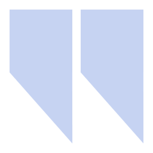
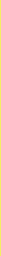
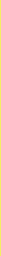
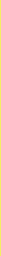

User statistics
[userstats]
%username%
%linenums% lines · %actionnums% actions[swears] · %swears% swears[/swears]
"%randomline%"
"%randomline%"
[/userstats][allusers-section]
These users didn't speak that much:
[allusers]%username% - %linenums% · [/allusers][allusers-last]%username% - %linenums%[/allusers-last]
[/allusers-section]
 Specifics
Lines by time posted
 0 - 6: %dawnpercent%

6 - 12: %morningpercent%%
0 - 6: %dawnpercent%

6 - 12: %morningpercent%%
 12 - 18: %daypercent%%
12 - 18: %daypercent%%
 18 - 0: %nightpercent%%
18 - 0: %nightpercent%%
Mouseover for details
Total number of lines in #7mi: %totallines%
0 - 6: %dawnpercent%

6 - 12: %morningpercent%%
12 - 18: %daypercent%%
18 - 0: %nightpercent%%
Mouseover for details
Total number of lines in #7mi: %totallines%
Most common words:
[commonwords-odd] %word%: %uses% uses
[/commonwords-odd][commonwords-odd-last] %word%: %uses% uses
[/commonwords-odd-last]
[commonwords-even] %word%: %uses% uses
[/commonwords-even][commonwords-even-last] %word%: %uses% uses
[/commonwords-even-last]